Zero-Margin High-Resolution Taskbar Icons
Cropped to 100% full-bleed edge-to-edge content so icons pop at maximum crispness in Windows Taskbar & Task Manager
⚡ 0 Empty Background Margins • 100% Canvas Utilization • Pixel-Perfect at 16px, 20px, 24px, 32px
⚖️ Before vs. After (Why Removing Background Margins Fixes "Low-Res" Appearance)
❌ With Background Margins (Old)
Only ~60% of the canvas was used. In a 24px taskbar slot, the symbol shrank to ~14px, looking tiny and blurry.

24px (Shallow symbol)
✅ Zero-Margin Tight Scaling (New)
Content fills 100% of the canvas width (X: 0 to 23). Uses every single pixel of the 24px slot for maximum sharpness.
24px (Full-bleed edge-to-edge!)
🌙 Windows 11 Dark Taskbar (True 24px Scale)
☀️ Windows 11 Light Taskbar (True 24px Scale)
📊 Windows 11 Task Manager (Processes Tab — True 16×16px Icon)
Task Manager
Processes • 39% CPU • 51% Memory
LatticeLedger (Zero-Margin Tight)
HIGH RESOLUTION
Running
0.2%
82.4 MB
0.1 MB/s
LatticeLedger (Old with background padding)
Running
0.2%
82.4 MB
0.1 MB/s
Running
1.1%
128.5 MB
0.3 MB/s
📐 Zero-Margin Density Matrix (100% Canvas Fill)
16 × 16 px
Task Manager (16x14 filled)
24 × 24 px
Taskbar Small (24x21 filled)
32 × 32 px
Taskbar Standard (32x28 filled)
48 × 48 px
Desktop Medium (48x42 filled)
64 × 64 px
High-DPI Desktop
256 × 256 px
Master ICO Tier
🔍 Zoomed Pixel Inspector (Pixel-by-Pixel Verification)
16×16 px (Zoomed 800%)
Fills edge-to-edge horizontally
24×24 px (Zoomed 600%)
Taskbar Scale (Crisp, bold lines)
32×32 px (Zoomed 500%)
Sharp stroke definitions